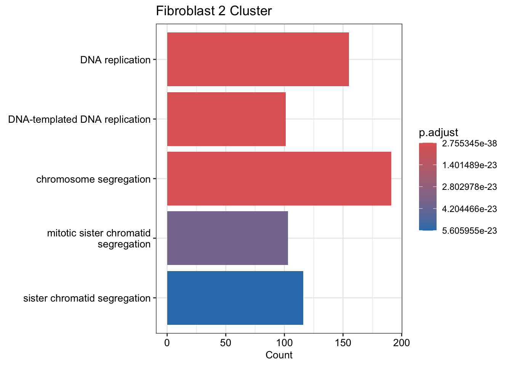
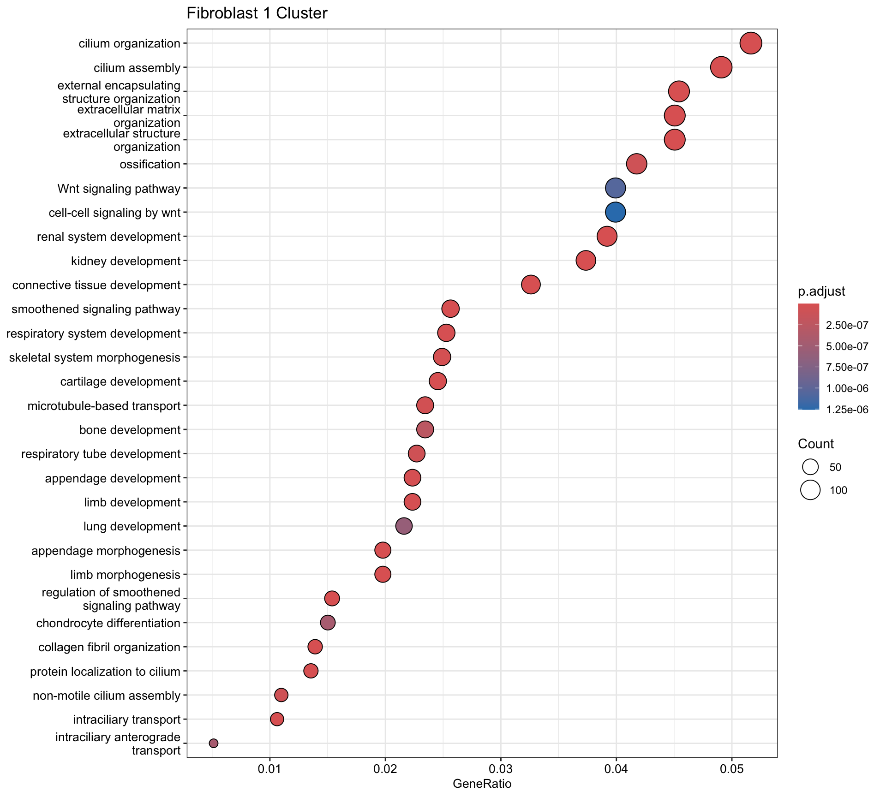

Fibroblasts Subgroups Preliminary
2024-09-19
Last updated: 2024-11-16
Checks: 5 2
Knit directory: Myocarditis
snRNAseq/analysis/
This reproducible R Markdown analysis was created with workflowr (version 1.7.1). The Checks tab describes the reproducibility checks that were applied when the results were created. The Past versions tab lists the development history.
The R Markdown is untracked by Git. To know which version of the R
Markdown file created these results, you’ll want to first commit it to
the Git repo. If you’re still working on the analysis, you can ignore
this warning. When you’re finished, you can run
wflow_publish to commit the R Markdown file and build the
HTML.
Great job! The global environment was empty. Objects defined in the global environment can affect the analysis in your R Markdown file in unknown ways. For reproduciblity it’s best to always run the code in an empty environment.
The command set.seed(12345) was run prior to running the
code in the R Markdown file. Setting a seed ensures that any results
that rely on randomness, e.g. subsampling or permutations, are
reproducible.
Great job! Recording the operating system, R version, and package versions is critical for reproducibility.
Nice! There were no cached chunks for this analysis, so you can be confident that you successfully produced the results during this run.
Using absolute paths to the files within your workflowr project makes it difficult for you and others to run your code on a different machine. Change the absolute path(s) below to the suggested relative path(s) to make your code more reproducible.
| absolute | relative |
|---|---|
| /Users/immbio/Desktop/Emily/Myocarditis snRNAseq/data/01 Merged Seurat files/Myocarditis_allfiltered_12.11.24.rds | ../data/01 Merged Seurat files/Myocarditis_allfiltered_12.11.24.rds |
| /Users/immbio/Desktop/Emily/Myocarditis snRNAseq/docs/Markers/DEGenes_condition pos. and neg. AM | ../docs/Markers/DEGenes_condition pos. and neg. AM |
| /Users/immbio/Desktop/Emily/Myocarditis snRNAseq/docs/Markers/DEGenesFb | ../docs/Markers/DEGenesFb |
| /Users/immbio/Desktop/Emily/Myocarditis snRNAseq/docs/Fb markers after HH2_HH3 removal | ../docs/Fb markers after HH2_HH3 removal |
| /Users/immbio/Desktop/Emily/Myocarditis snRNAseq/docs/Markers_dat_all_clusters_frequency_relative abundance_V2 | ../docs/Markers_dat_all_clusters_frequency_relative abundance_V2 |
| /Users/immbio/Desktop/Emily/Myocarditis snRNAseq/docs/allFb_PeriFb_vsmc_int markers | ../docs/allFb_PeriFb_vsmc_int markers |
Great! You are using Git for version control. Tracking code development and connecting the code version to the results is critical for reproducibility.
The results in this page were generated with repository version 0583f93. See the Past versions tab to see a history of the changes made to the R Markdown and HTML files.
Note that you need to be careful to ensure that all relevant files for
the analysis have been committed to Git prior to generating the results
(you can use wflow_publish or
wflow_git_commit). workflowr only checks the R Markdown
file, but you know if there are other scripts or data files that it
depends on. Below is the status of the Git repository when the results
were generated:
Ignored files:
Ignored: .DS_Store
Ignored: .Rhistory
Ignored: .Rproj.user/
Ignored: analysis/.DS_Store
Ignored: analysis/.Rhistory
Ignored: analysis/figure/
Ignored: data/
Untracked files:
Untracked: analysis/Fibroblast_subset_V2.Rmd
Unstaged changes:
Modified: analysis/DE_Genes_Disease_Condition.Rmd
Deleted: analysis/Fibroblast subset V2 reclustering.Rmd
Deleted: analysis/Fibroblast-subset-V2-reclustering.Rmd
Note that any generated files, e.g. HTML, png, CSS, etc., are not included in this status report because it is ok for generated content to have uncommitted changes.
There are no past versions. Publish this analysis with
wflow_publish() to start tracking its development.
##load merged file
seuratM <- readRDS("/Users/immbio/Desktop/Emily/Myocarditis snRNAseq/data/01 Merged Seurat files/Myocarditis_allfiltered_12.11.24.rds")
table(seuratM$dataset)
312581_05-5_20230308_Hu_nucseq_SG36_EMB_GEM 312581_06-6_20230308_Hu_nucseq_SG37_EMB_GEM
4323 1123
353921_28-28_20240529_Hu_nucseq_Immpath_EMB18 353921_29-29_20240529_Hu_nucseq_Immpath_EMB24
208 105
353921_30-30_20240529_Hu_nucseq_Immpath_EMB25 353921_31-31_20240529_Hu_nucseq_Immpath_EMB27
227 579
353921_32-32_20240529_Hu_nucseq_Immpath_EMB29 353921_33-33_20240529_Hu_nucseq_Immpath_EMB30
335 730
353921_34-34_20240529_Hu_nucseq_Immpath_EMB35 353921_35-35_20240529_Hu_nucseq_Immpath_EMB37
1217 604
359861_09-11_20240723_Hu_nucseq_Ber_Pat5_EM979_1 359861_10-13_20240723_Hu_nucseq_Ber_Pat5_EM979_2
771 1476
359861_11-1_20240730_Hu_nucseq_Ber_Pat1_EMB1537 359861_12-2_20240730_Hu_nucseq_Ber_Pat2_EMB1041
316 608
359861_16-8_20240730_Hu_nucseq_Immpath_EMB47 359861_17-9_20240730_Hu_nucseq_Immpath_EMB48
513 426
o27533_1_12-12_20220203_Hu_nucseq_EMB31_GEM o27936_1_7-7_20220309_Hu_nucseq_EMB32_GEM
236 1192
o28576_1_01-1_20220525_Hu_nucseq_Graz_1_EMB_GEM o28576_1_02-2_20220525_Hu_nucseq_Graz_2_EMB_GEM
2740 1684
o28576_1_03-3_20220525_Hu_nucseq_Graz_3_EMB_GEM o28576_1_04-4_20220525_Hu_nucseq_Graz_4_EMB_GEM
2396 545
o28576_1_05-5_20220525_Hu_nucseq_Graz_5_EMB_GEM o28576_1_06-6_20220525_Hu_nucseq_Graz_6_EMB_GEM
781 491
o28576_1_07-7_20220525_Hu_nucseq_Graz_7_EMB_GEM o28576_1_08-8_20220525_Hu_nucseq_Graz_8_HH_GEM
653 3921
o28576_1_12-12_20220525_Hu_nucseq_Graz_12_HH_GEM o28576_1_13-13_20220525_Hu_nucseq_EMB32_GEM
3818 1428
o292731_1-1_20220818_Hu_nucseq_Graz_9_HH_GEM o292731_2-2_20220818_Hu_nucseq_Graz_13_HH_GEM
4908 9882
o292731_3-3_20220818_Hu_nucseq_SG_33_EMB_GEM o292731_4-4_20220818_Hu_nucseq_SG_34_EMB_GEM
6286 620
o292731_5-5_20220818_Hu_nucseq_SG_35_EMB_GEM o294781_01-1_20220912_Hu_nucseq_Graz_21_HH_GEM
2363 1442
o294781_02-2_20220912_Hu_nucseq_Graz_22_HH_GEM o294781_03-3_20220912_Hu_nucseq_Graz_23_HH_GEM
1998 841
o294781_04-4_20220912_Hu_nucseq_Graz_24_HH_GEM o294781_05-5_20220912_Hu_nucseq_Graz_14_EMB_GEM
1480 1268
o294781_06-6_20220912_Hu_nucseq_Graz_15_EMB_GEM o294781_09-9_20220912_Hu_nucseq_Graz_18_EMB_GEM
4439 2280
o294781_10-10_20220912_Hu_nucseq_Graz_19_EMB_GEM o294781_11-11_20220912_Hu_nucseq_Graz_20_EMB_GEM
111 2706 table(seuratM$dataset)
312581_05-5_20230308_Hu_nucseq_SG36_EMB_GEM 312581_06-6_20230308_Hu_nucseq_SG37_EMB_GEM
4323 1123
353921_28-28_20240529_Hu_nucseq_Immpath_EMB18 353921_29-29_20240529_Hu_nucseq_Immpath_EMB24
208 105
353921_30-30_20240529_Hu_nucseq_Immpath_EMB25 353921_31-31_20240529_Hu_nucseq_Immpath_EMB27
227 579
353921_32-32_20240529_Hu_nucseq_Immpath_EMB29 353921_33-33_20240529_Hu_nucseq_Immpath_EMB30
335 730
353921_34-34_20240529_Hu_nucseq_Immpath_EMB35 353921_35-35_20240529_Hu_nucseq_Immpath_EMB37
1217 604
359861_09-11_20240723_Hu_nucseq_Ber_Pat5_EM979_1 359861_10-13_20240723_Hu_nucseq_Ber_Pat5_EM979_2
771 1476
359861_11-1_20240730_Hu_nucseq_Ber_Pat1_EMB1537 359861_12-2_20240730_Hu_nucseq_Ber_Pat2_EMB1041
316 608
359861_16-8_20240730_Hu_nucseq_Immpath_EMB47 359861_17-9_20240730_Hu_nucseq_Immpath_EMB48
513 426
o27533_1_12-12_20220203_Hu_nucseq_EMB31_GEM o27936_1_7-7_20220309_Hu_nucseq_EMB32_GEM
236 1192
o28576_1_01-1_20220525_Hu_nucseq_Graz_1_EMB_GEM o28576_1_02-2_20220525_Hu_nucseq_Graz_2_EMB_GEM
2740 1684
o28576_1_03-3_20220525_Hu_nucseq_Graz_3_EMB_GEM o28576_1_04-4_20220525_Hu_nucseq_Graz_4_EMB_GEM
2396 545
o28576_1_05-5_20220525_Hu_nucseq_Graz_5_EMB_GEM o28576_1_06-6_20220525_Hu_nucseq_Graz_6_EMB_GEM
781 491
o28576_1_07-7_20220525_Hu_nucseq_Graz_7_EMB_GEM o28576_1_08-8_20220525_Hu_nucseq_Graz_8_HH_GEM
653 3921
o28576_1_12-12_20220525_Hu_nucseq_Graz_12_HH_GEM o28576_1_13-13_20220525_Hu_nucseq_EMB32_GEM
3818 1428
o292731_1-1_20220818_Hu_nucseq_Graz_9_HH_GEM o292731_2-2_20220818_Hu_nucseq_Graz_13_HH_GEM
4908 9882
o292731_3-3_20220818_Hu_nucseq_SG_33_EMB_GEM o292731_4-4_20220818_Hu_nucseq_SG_34_EMB_GEM
6286 620
o292731_5-5_20220818_Hu_nucseq_SG_35_EMB_GEM o294781_01-1_20220912_Hu_nucseq_Graz_21_HH_GEM
2363 1442
o294781_02-2_20220912_Hu_nucseq_Graz_22_HH_GEM o294781_03-3_20220912_Hu_nucseq_Graz_23_HH_GEM
1998 841
o294781_04-4_20220912_Hu_nucseq_Graz_24_HH_GEM o294781_05-5_20220912_Hu_nucseq_Graz_14_EMB_GEM
1480 1268
o294781_06-6_20220912_Hu_nucseq_Graz_15_EMB_GEM o294781_09-9_20220912_Hu_nucseq_Graz_18_EMB_GEM
4439 2280
o294781_10-10_20220912_Hu_nucseq_Graz_19_EMB_GEM o294781_11-11_20220912_Hu_nucseq_Graz_20_EMB_GEM
111 2706 table(seuratM$RNA_snn_res.0.25)
0 1 2 3 4 5 6 7 8 9 10 11 12 13 14
17699 13639 12754 8222 5475 4836 3723 2365 2156 905 882 694 380 249 91 table(seuratM$patient)
Healthy 01 Healthy 02 Healthy 03 Healthy 04 Healthy 05 Healthy 06
3921 3818 4908 9882 1442 1998
Healthy 07 Healthy 08 AM 01 AM 02 AM 03 AM 04
841 1480 6286 4323 1123 208
AM 05 AM 06 AM 07 AM 08 AM 09 AM 10
579 335 1217 604 513 426
AM 11 AM 12 AM 13 AM 14 AM 15 AM 16
236 1192 2740 1684 4439 2247
AM 17 AM 18 CMP 01 CMP 02 CMP 03 CMP 04
316 608 105 227 730 1428
CMP 05 CMP 06 CMP 07 CMP 08 CMP 09 CMP 10
620 653 1268 2280 2396 545
CMP 11 CMP 12 CMP 13 Sarcoidosis 01 Sarcoidosis 02
781 491 111 2363 2706 table(seuratM$orig.ident)
74070 #### Rename clusters
seuratM$clusterName <- "clusterName"
Idents(seuratM) <- seuratM$clusterName
seuratM$clusterName[which(seuratM$RNA_snn_res.0.25 %in% "0" )] <- "Fb1"
seuratM$clusterName[which(seuratM$RNA_snn_res.0.25 %in% "1" )] <- "BEC1"
seuratM$clusterName[which(seuratM$RNA_snn_res.0.25 %in% "2" )] <- "PeriFb1"
seuratM$clusterName[which(seuratM$RNA_snn_res.0.25 %in% "3" )] <- "Cardiomyocyte"
seuratM$clusterName[which(seuratM$RNA_snn_res.0.25 %in% "4" )] <- "MCP1"
seuratM$clusterName[which(seuratM$RNA_snn_res.0.25 %in% "5" )] <- "TC"
seuratM$clusterName[which(seuratM$RNA_snn_res.0.25 %in% "6" )] <- "MCP2"
seuratM$clusterName[which(seuratM$RNA_snn_res.0.25 %in% "7" )] <- "BEC2"
seuratM$clusterName[which(seuratM$RNA_snn_res.0.25 %in% "8" )] <- "VSMC"
seuratM$clusterName[which(seuratM$RNA_snn_res.0.25 %in% "9" )] <- "NC"
seuratM$clusterName[which(seuratM$RNA_snn_res.0.25 %in% "10" )] <- "INT1"
seuratM$clusterName[which(seuratM$RNA_snn_res.0.25 %in% "11" )] <- "Fb2"
seuratM$clusterName[which(seuratM$RNA_snn_res.0.25 %in% "12" )] <- "Fb3"
seuratM$clusterName[which(seuratM$RNA_snn_res.0.25 %in% "13" )] <- "PeriFb2"
seuratM$clusterName[which(seuratM$RNA_snn_res.0.25 %in% "14" )] <- "AdipoC"
colclusterName <- c("#D53E4F", "#f4a582", "#FEE08B","#feb24c","#67001f", "#01665e","#66C2A5","#c7eae5","#BEAED4", "#355C7D","#3288BD","#8c510a" ,"#fde0dd","#B45B5C","#dd1c77")
names(colclusterName) <- c("Cardiomyocyte","Fb1","Fb2","Fb3", "INT1", "PeriFb1", "PeriFb2", "VSMC","NC", "BEC1","BEC2", "AdipoC", "MCP1","MCP2","TC")
colpat_sub<- c("#dfc27d","#BE3144","#355C7D", "#779d8d")
seuratM$clusterName <- factor(seuratM$clusterName, levels=c("Cardiomyocyte", "Fb1", "Fb2", "Fb3", "INT1","PeriFb1", "PeriFb2", "VSMC", "NC", "BEC1", "BEC2", "AdipoC", "MCP1", "MCP2", "TC"))
Idents(seuratM) <- seuratM$clusterName
DimPlot(seuratM, reduction = "umap", pt.size = 0.1, label = TRUE, cols = colclusterName)
# DE Genes
DEGenesCluster <- FindAllMarkers (seuratM, only.pos = TRUE, logfc.threshold = 0.2) %>%
dplyr::filter(p_val_adj < 0.01)
#write.table(DEGenesCluster, file= "/Users/immbio/Desktop/Emily/Myocarditis snRNAseq/docs/Markers/DEGenes_condition pos. and neg. AM, Healthy, CMP, Sarcoidosis", sep="\t",quote=F,row.names=F,col.names=T)
##adjust table
DEGenesCluster_adj <- DEGenesCluster %>%
mutate(Gene=gene) %>%
mutate(gene=gsub("^.*\\.", "", Gene)) %>%
mutate(EnsID=gsub("\\..*","", Gene))
#View(DEGenesCluster)##GSEA for Fb2
DEGenesFb2 <- DEGenesCluster_adj %>% filter(cluster == "Fb2")
#head(DEGenesFb2)
#write.table(DEGenesFb2, file= "/Users/immbio/Desktop/Emily/Myocarditis snRNAseq/docs/Markers/DEGenesFb", sep="\t",quote=F,row.names=F,col.names=T)
egoFb2 <- enrichGO(gene = unique(DEGenesFb2$EnsID),
OrgDb = org.Hs.eg.db,
keyType = 'ENSEMBL',
ont = "BP",
pAdjustMethod = "BH",
pvalueCutoff = 0.05,
qvalueCutoff = 0.05)
egoFb2 <- setReadable(egoFb2, OrgDb = org.Hs.eg.db)
dotplot(egoFb2, showCategory=20, title = "Fibroblast 2 Cluster Biological Process", font.size = 10)
#Barplot Fb2
barplot(egoFb2,
drop = TRUE,
showCategory = 5,
title = "Fibroblast 2 Cluster",
font.size = 10)
egoFb2 <- enrichGO(gene = unique(DEGenesFb2$EnsID),
OrgDb = org.Hs.eg.db,
keyType = 'ENSEMBL',
ont = "CC",
pAdjustMethod = "BH",
pvalueCutoff = 0.05,
qvalueCutoff = 0.05)
egoFb2 <- setReadable(egoFb2, OrgDb = org.Hs.eg.db)
dotplot(egoFb2, showCategory=20, title = "Fibroblast 2 Cluster Cellular Component", font.size = 10)egoFb2 <- enrichGO(gene = unique(DEGenesFb2$EnsID),
OrgDb = org.Hs.eg.db,
keyType = 'ENSEMBL',
ont = "MF",
pAdjustMethod = "BH",
pvalueCutoff = 0.05,
qvalueCutoff = 0.05)
egoFb2 <- setReadable(egoFb2, OrgDb = org.Hs.eg.db)
dotplot(egoFb2, showCategory=20, title = "Fibroblast 2 Metabolic Function", font.size = 10)##GSEA for Fb1
DEGenesFb1 <- DEGenesCluster_adj %>% filter(cluster == "Fb1")
#head(DEGenesFb2)
egoFb1 <- enrichGO(gene = unique(DEGenesFb1$EnsID),
OrgDb = org.Hs.eg.db,
keyType = 'ENSEMBL',
ont = "BP",
pAdjustMethod = "BH",
pvalueCutoff = 0.05,
qvalueCutoff = 0.05)
egoFb1 <- setReadable(egoFb1, OrgDb = org.Hs.eg.db)
dotplot(egoFb1, showCategory=30, title = "Fibroblast 1 Cluster", font.size = 10)
# Barplot Fb1
barplot(egoFb1,
drop = TRUE,
showCategory = 20,
title = "Fibroblast 1 Cluster",
font.size = 10)##GSEA for Fb3
DEGenesFb3 <- DEGenesCluster_adj %>% filter(cluster == "Fb3")
#head(DEGenesFb3)
egoFb3 <- enrichGO(gene = unique(DEGenesFb3$EnsID),
OrgDb = org.Hs.eg.db,
keyType = 'ENSEMBL',
ont = "BP",
pAdjustMethod = "BH",
pvalueCutoff = 0.05,
qvalueCutoff = 0.05)
egoFb3 <- setReadable(egoFb3, OrgDb = org.Hs.eg.db)
dotplot(egoFb3, showCategory=10, title = "Fibroblast 3 Cluster", font.size = 10)# Barplot Fb3
barplot(egoFb3,
drop = TRUE,
showCategory = 20,
title = "Fibroblast 3 Cluster",
font.size = 10)##GSEA for Int non significant
##GSEA for PeriFb1
DEGenesPeriFb1 <- DEGenesCluster_adj %>% filter(cluster == "PeriFb1")
#head(DEGenesPeriFb1)
egoPeriFb1 <- enrichGO(gene = unique(DEGenesPeriFb1$EnsID),
OrgDb = org.Hs.eg.db,
keyType = 'ENSEMBL',
ont = "BP",
pAdjustMethod = "BH",
pvalueCutoff = 0.05,
qvalueCutoff = 0.05)
egoPeriFb1 <- setReadable(egoPeriFb1, OrgDb = org.Hs.eg.db)
dotplot(egoPeriFb1, showCategory=10, title = "Perivascular Fb 1", font.size = 10)barplot(egoPeriFb1,
drop = TRUE,
showCategory = 20,
title = "Perivascular Fb 1",
font.size = 10)##GSEA for PeriFb2
DEGenesPeriFb2 <- DEGenesCluster_adj %>% filter(cluster == "PeriFb2")
#head(DEGenesPeriFb1)
egoPeriFb2 <- enrichGO(gene = unique(DEGenesPeriFb2$EnsID),
OrgDb = org.Hs.eg.db,
keyType = 'ENSEMBL',
ont = "BP",
pAdjustMethod = "BH",
pvalueCutoff = 0.05,
qvalueCutoff = 0.05)
egoPeriFb2 <- setReadable(egoPeriFb1, OrgDb = org.Hs.eg.db)
dotplot(egoPeriFb2, showCategory=10, title = "Perivascular Fb 2", font.size = 10)barplot(egoPeriFb2,
drop = TRUE,
showCategory = 20,
title = "Perivascular Fb 2",
font.size = 10)##GSEA for PeriFb2
DEGenesVsmc <- DEGenesCluster_adj %>% filter(cluster == "VSMC")
#head(DEGenesVsmc)
egoVsmc <- enrichGO(gene = unique(DEGenesVsmc$EnsID),
OrgDb = org.Hs.eg.db,
keyType = 'ENSEMBL',
ont = "BP",
pAdjustMethod = "BH",
pvalueCutoff = 0.05,
qvalueCutoff = 0.05)
egoPeriVsmc <- setReadable(egoVsmc, OrgDb = org.Hs.eg.db)
dotplot(egoPeriVsmc, showCategory=10, title = "VSMC", font.size = 10)barplot(egoPeriVsmc,
drop = TRUE,
showCategory = 20,
title = "VSMC",
font.size = 10)DEGenesClusterall <- FindAllMarkers(seuratM, only.pos = FALSE, logfc.threshold = 0.2) %>%
dplyr::filter(p_val_adj < 0.01)
##adjust table
DEGenesClusterall_adj <- DEGenesClusterall %>%
mutate(Gene=gene) %>%
mutate(gene=gsub("^.*\\.", "", Gene)) %>%
mutate(EnsID=gsub("\\..*","", Gene))## Volcano Plot with pos. and neg. DE Genes Fb2
DEGenesFb2all <- DEGenesClusterall_adj %>% filter(cluster == "Fb2")
head(DEGenesFb2all) p_val avg_log2FC pct.1 pct.2 p_val_adj cluster gene
ENSG00000154175.ABI3BP.2 0 3.305118 0.742 0.137 0 Fb2 ABI3BP
ENSG00000166147.FBN1.2 0 2.588820 0.774 0.180 0 Fb2 FBN1
ENSG00000117228.GBP1.2 0 2.877544 0.682 0.123 0 Fb2 GBP1
ENSG00000115414.FN1.2 0 3.175310 0.811 0.256 0 Fb2 FN1
ENSG00000102265.TIMP1.2 0 3.314412 0.599 0.116 0 Fb2 TIMP1
ENSG00000164877.MICALL2.2 0 2.357303 0.549 0.085 0 Fb2 MICALL2
Gene EnsID
ENSG00000154175.ABI3BP.2 ENSG00000154175.ABI3BP ENSG00000154175
ENSG00000166147.FBN1.2 ENSG00000166147.FBN1 ENSG00000166147
ENSG00000117228.GBP1.2 ENSG00000117228.GBP1 ENSG00000117228
ENSG00000115414.FN1.2 ENSG00000115414.FN1 ENSG00000115414
ENSG00000102265.TIMP1.2 ENSG00000102265.TIMP1 ENSG00000102265
ENSG00000164877.MICALL2.2 ENSG00000164877.MICALL2 ENSG00000164877#View(DEGenesFb2all)
res_Fb2 <- as.data.frame(DEGenesFb2all)
EnhancedVolcano(res_Fb2,
x = 'avg_log2FC',
y = 'p_val_adj',
lab = res_Fb2$gene,
# xlim =c(-6, 6),
title = 'DE Genes Fibroblast 2 Cluster',
xlab = bquote(~Log[2]~ 'fold change'),
pCutoff = 10e-1,
FCcutoff = 1.5,
cutoffLineType = 'twodash',
cutoffLineWidth = 0.8,
pointSize = 1.0,
labSize = 5.0,
# shape = c(1,4, 23,25),
colAlpha = 1,
legendLabels=c('Not sig.','Log (base 2) FC','p-value',
'p-value & Log (base 2) FC'),
legendPosition = 'right',
legendLabSize = 12,
legendIconSize = 5.0,
# drawConnectors = TRUE,
# widthConnectors = 0.75,
# ridlines.major = FALSE,
gridlines.minor = FALSE)
EnhancedVolcano(res_Fb2,
x = 'avg_log2FC',
y = 'p_val_adj',
lab = res_Fb2$gene,
selectLab = c("CXCL6","STAT1", "VCAN", "GBP1P1", "GBP2", "SRPX2", "SLIT2", "CCL19","CLSPN", "SLIT2","GBP2", "VDR", "CCL11","CCL2",
"CXCL9", "CXCL10", "PDGFA", "CXCL1", "FN1","ABI3BP","FBN1","TIMP", "GBP1", "C1GALT1", "EFEMP1", "APOL1"),
# xlim =c(-6, 6),
title = 'DE Genes Fibroblast 2 Cluster',
xlab = bquote(~Log[2]~ 'fold change'),
pCutoff = 10e-1,
FCcutoff = 1.5,
cutoffLineType = 'twodash',
cutoffLineWidth = 0.8,
pointSize = 1.0,
labSize = 5.0,
# shape = c(1,4, 23,25),
colAlpha = 1,
legendLabels=c('Not sig.','Log (base 2) FC','p-value',
'p-value & Log (base 2) FC'),
legendPosition = 'right',
legendLabSize = 12,
legendIconSize = 5.0,
# drawConnectors = TRUE,
# widthConnectors = 0.75,
# ridlines.major = FALSE,
gridlines.minor = FALSE)# Select only Fibroblast 2 Cluster
seuratFb2 <- subset(seuratM, clusterName %in% "Fb2")
table(seuratFb2$clusterName)
Cardiomyocyte Fb1 Fb2 Fb3 INT1 PeriFb1 PeriFb2
0 0 694 0 0 0 0
VSMC NC BEC1 BEC2 AdipoC MCP1 MCP2
0 0 0 0 0 0 0
TC
0 table(seuratFb2$patient)
Healthy 01 Healthy 02 Healthy 03 Healthy 04 Healthy 05 Healthy 06
3 0 40 3 0 1
Healthy 07 Healthy 08 AM 01 AM 02 AM 03 AM 04
0 5 303 15 0 1
AM 05 AM 06 AM 07 AM 08 AM 09 AM 10
0 0 28 0 0 1
AM 11 AM 12 AM 13 AM 14 AM 15 AM 16
0 2 3 0 29 228
AM 17 AM 18 CMP 01 CMP 02 CMP 03 CMP 04
2 2 0 0 0 1
CMP 05 CMP 06 CMP 07 CMP 08 CMP 09 CMP 10
3 0 1 0 7 2
CMP 11 CMP 12 CMP 13 Sarcoidosis 01 Sarcoidosis 02
2 0 0 10 2 table(seuratFb2$orig.ident)
694 # nuclei originate from AM 01 and AM 16 primarilyIdents(seuratM) <- seuratM$clusterName
seuratFb <- subset(seuratM, clusterName %in% c("Fb1", "Fb2", "Fb3", "INT1", "PeriFb1", "PeriFb2", "VSMC"))
table(seuratFb$patient)
Healthy 01 Healthy 02 Healthy 03 Healthy 04 Healthy 05 Healthy 06
1918 2275 2477 4202 912 1055
Healthy 07 Healthy 08 AM 01 AM 02 AM 03 AM 04
413 944 527 2468 594 66
AM 05 AM 06 AM 07 AM 08 AM 09 AM 10
333 99 724 371 194 243
AM 11 AM 12 AM 13 AM 14 AM 15 AM 16
98 585 1488 995 2727 389
AM 17 AM 18 CMP 01 CMP 02 CMP 03 CMP 04
99 221 48 139 387 651
CMP 05 CMP 06 CMP 07 CMP 08 CMP 09 CMP 10
262 363 767 1149 1365 230
CMP 11 CMP 12 CMP 13 Sarcoidosis 01 Sarcoidosis 02
426 225 49 1198 1138 levels(seuratFb)[1] "Fb1" "Fb2" "Fb3" "INT1" "PeriFb1" "PeriFb2" "VSMC" DimPlot(seuratFb, reduction = "umap", cols = colclusterName, pt.size = 0.3)Idents(seuratFb) <- seuratFb$pat_sub
DimPlot(seuratFb, reduction = "umap", cols = colpat_sub, pt.size = 0.3)Fb_markers_patsub <- FindAllMarkers(seuratFb, only.pos=T) %>%
dplyr::filter(p_val_adj < 0.01)
#View(Fb_markers_patsub)Idents(seuratFb) <- seuratFb$clusterName
Fbmarkers <- FindAllMarkers(seuratFb, only.pos=T) %>%
dplyr::filter(p_val_adj < 0.01)##
Idents(seuratFb) <- seuratFb$clusterName
seuratFb$clusterName <- factor(seuratFb$clusterName, levels =c("Fb1","Fb2","Fb3", "INT1", "PeriFb1", "PeriFb2", "VSMC"))## Create Heatmap
seuratFb$clusterName <- factor(seuratFb$clusterName, levels =c("Fb1","Fb2","Fb3", "INT1", "PeriFb1", "PeriFb2", "VSMC"))
genes <- data.frame(gene=rownames(seuratFb)) %>%
mutate(geneID=gsub("^.*\\.", "", gene))
selGenesFb <- data.frame(geneID=rev(c("XIST", "ABI3BP", "NOX4", "FBN1", "GBP1", "FN1", "TIMP1", "MICALL2", "CCL2", "SRPX2", "CXCL6", "CXCL9", "CXCL10", "CXCL11", "SPHK1", "HIF3A", "LAMA2", "STAT1", "PDGFRA", "MEG3", "ABCA8", "LAMB1", "C7", "BMP4", "GREM1", "CARMN", "COL5A3", "PDGFRB","ACTA2", "NOTCH3","ADAP1", "ADAMTS4", "RGS5", "HLA-B"))) %>% left_join(., genes, by="geneID") %>% distinct(geneID, .keep_all = TRUE)
DotPlot(seuratFb, features = selGenesFb, group.by= "clusterName") + RotatedAxis() + scale_color_viridis(option="T") + coord_flip()
avgHeatmap <- function(seuratFb, selGenes, colVecIdent, colVecCond=NULL,
ordVec=NULL, gapVecR=NULL, gapVecC=NULL,cc=FALSE,
cr=FALSE, condCol=FALSE){
selGenes <- selGenes$gene
## assay data
clusterAssigned <- as.data.frame(Idents(seuratFb)) %>%
dplyr::mutate(cell=rownames(.))
colnames(clusterAssigned)[1] <- "ident"
seuratDat <- GetAssayData(seuratFb)
## genes of interest
genes <- data.frame(gene=rownames(seuratFb)) %>%
mutate(geneID=gsub("^.*\\.", "", gene)) %>% filter(geneID %in% selGenes)
## matrix with averaged cnts per ident
logNormExpres <- as.data.frame(t(as.matrix(
seuratDat[which(rownames(seuratDat) %in% genes$gene),])))
logNormExpres <- logNormExpres %>% dplyr::mutate(cell=rownames(.)) %>%
dplyr::left_join(.,clusterAssigned, by=c("cell")) %>%
dplyr::select(-cell) %>% dplyr::group_by(ident) %>%
dplyr::summarise_all(mean)
logNormExpresMa <- logNormExpres %>% dplyr::select(-ident) %>% as.matrix()
rownames(logNormExpresMa) <- logNormExpres$ident
logNormExpresMa <- t(logNormExpresMa)
rownames(logNormExpresMa) <- gsub("^.*?\\.","",rownames(logNormExpresMa))
## remove genes if they are all the same in all groups
ind <- apply(logNormExpresMa, 1, sd) == 0
logNormExpresMa <- logNormExpresMa[!ind,]
genes <- genes[!ind,]
## color columns according to cluster
annotation_col <- as.data.frame(gsub("(^.*?_)","",
colnames(logNormExpresMa)))%>%
dplyr::mutate(celltype=gsub("(_.*$)","",colnames(logNormExpresMa)))
colnames(annotation_col)[1] <- "col1"
annotation_col <- annotation_col %>%
dplyr::mutate(cond = gsub("(^[0-9]_?)","",col1)) %>%
dplyr::select(cond, celltype)
rownames(annotation_col) <- colnames(logNormExpresMa)
ann_colors = list(
celltype=colVec)
if(is.null(ann_colors$cond)){
annotation_col$cond <- NULL
}
## adjust order
logNormExpresMa <- logNormExpresMa[selGenes,]
if(is.null(ordVec)){
ordVec <- levels(seuratFb)
ordVec <- c(c("Fb1","Fb2","Fb3", "INT1", "PeriFb1", "PeriFb2", "VSMC"))
}
logNormExpresMa <- logNormExpresMa[,ordVec]
## scaled row-wise
pheatmap(logNormExpresMa, scale="row" ,treeheight_row = 0,cluster_rows = cr,
cluster_cols = cc, color = colorRampPalette(c("#2166AC", "#F7F7F7", "#B2182B"))(50),
annotation_col = annotation_col, cellwidth=15, cellheight=10,
annotation_colors = ann_colors, gaps_row = gapVecR, gaps_col = gapVecC)
}
genesPlot <- data.frame(gene=c("XIST", "ABI3BP", "NOX4", "FBN1", "GBP1", "FN1", "TIMP1", "MICALL2", "CCL2", "SRPX2", "CXCL6", "CXCL9", "CXCL10", "CXCL11", "SPHK1", "HIF3A", "LAMA2", "STAT1", "PDGFRA", "MEG3", "ABCA8", "LAMB1", "C7", "BMP4", "GREM1", "CARMN", "COL5A3", "PDGFRB", "NOTCH3","ADAP1", "ADAMTS4", "RGS5", "HLA-B"))
levels(seuratFb)[1] "Fb1" "Fb2" "Fb3" "INT1" "PeriFb1" "PeriFb2" "VSMC" colVec <- colclusterName
# colVec <- c(colPal, colPal, colPal)
# colVec <- c("blue", "red")
avgHeatmap(seuratFb, selGenes = genesPlot, colVecIdent = colVec)
# Filter for clusters Fb1, Fb2, Fb3, Int1, PeriFb1,2,3
seuratFb <- subset(seuratM, clusterName %in% c("Fb1", "Fb2", "Fb3", "INT1", "PeriFb1", "PeriFb2", "VSMC"))
# cell count N = 21641
DimPlot(seuratFb, reduction = "umap", cols = colclusterName, pt.size = 0.1)table(seuratFb$orig.ident)
34814 table(seuratFb$patient)
Healthy 01 Healthy 02 Healthy 03 Healthy 04 Healthy 05 Healthy 06
1918 2275 2477 4202 912 1055
Healthy 07 Healthy 08 AM 01 AM 02 AM 03 AM 04
413 944 527 2468 594 66
AM 05 AM 06 AM 07 AM 08 AM 09 AM 10
333 99 724 371 194 243
AM 11 AM 12 AM 13 AM 14 AM 15 AM 16
98 585 1488 995 2727 389
AM 17 AM 18 CMP 01 CMP 02 CMP 03 CMP 04
99 221 48 139 387 651
CMP 05 CMP 06 CMP 07 CMP 08 CMP 09 CMP 10
262 363 767 1149 1365 230
CMP 11 CMP 12 CMP 13 Sarcoidosis 01 Sarcoidosis 02
426 225 49 1198 1138 Fb_markers <- FindAllMarkers(seuratFb, only.pos=T) %>%
dplyr::filter(p_val_adj < 0.01)
#
#View(Fb_markers)
#write.table(Fb_markers, file= "/Users/immbio/Desktop/Emily/Myocarditis snRNAseq/docs/Fb markers after HH2_HH3 removal", sep="\t",quote=F,row.names=F,col.names=T)datList <- NULL
for(con in unique(seuratFb$patient)){
seuratSub <- subset(seuratFb, patient==con)
print(dim(seuratSub))
dat_con <- as.data.frame(table(seuratSub$clusterName)) %>%
mutate(percent=Freq/ncol(seuratSub)) %>% mutate(patient=con)
datList[[con]] <- dat_con
}[1] 39114 2468
[1] 39114 594
[1] 39114 66
[1] 39114 333
[1] 39114 99
[1] 39114 724
[1] 39114 371
[1] 39114 194
[1] 39114 243
[1] 39114 98
[1] 39114 585
[1] 39114 1488
[1] 39114 995
[1] 39114 527
[1] 39114 2727
[1] 39114 389
[1] 39114 99
[1] 39114 221
[1] 39114 48
[1] 39114 139
[1] 39114 387
[1] 39114 1365
[1] 39114 230
[1] 39114 426
[1] 39114 225
[1] 39114 363
[1] 39114 651
[1] 39114 262
[1] 39114 767
[1] 39114 1149
[1] 39114 49
[1] 39114 1918
[1] 39114 2275
[1] 39114 2477
[1] 39114 4202
[1] 39114 912
[1] 39114 1055
[1] 39114 413
[1] 39114 944
[1] 39114 1198
[1] 39114 1138dat_all <- do.call("rbind", datList)
# Order of patient levels
patient_order <- c("Healthy 01", "Healthy 02", "Healthy 03", "Healthy 04", "Healthy 05",
"Healthy 06", "Healthy 07", "Healthy 08", "AM 01", "AM 02",
"AM 03", "AM 04", "AM 05", "AM 06", "AM 07",
"AM 08", "AM 09", "AM 10", "AM 11", "AM 12", "AM 13", "AM 14",
"AM 15", "AM 16", "AM 17", "AM 18", "CMP 01", "CMP 02", "CMP 03",
"CMP 04", "CMP 05", "CMP 06", "CMP 07", "CMP 08", "CMP 09",
"CMP 10", "CMP 11", "CMP 12", "CMP 13", "Sarcoidosis 01", "Sarcoidosis 02")
View(dat_all)
# Convert the patient column to a factor with the desired order
dat_all$patient <- factor(dat_all$patient, levels = patient_order)
## plot abundance
ggbarplot(dat_all, x= "patient", y= "percent", fill = "Var1", legend = "right", legend.titel = "cluster", ylab = "frequency", palette = colclusterName ) + theme(axis.text.x = element_text(angle = 90, vjust = 0.5, hjust=1))datList <- NULL
for(con in unique(seuratFb$pat_sub)){
seuratSub <- subset(seuratFb, pat_sub==con)
print(dim(seuratSub))
dat_con <- as.data.frame(table(seuratSub$clusterName)) %>%
mutate(percent=Freq/ncol(seuratSub)) %>% mutate(diseaseCond=con)
datList[[con]] <- dat_con
}[1] 39114 12221
[1] 39114 6061
[1] 39114 14196
[1] 39114 2336dat_all <- do.call("rbind", datList)
order_patsub <- c("Healthy", "AM", "CMP", "Sarcoidosis")
ggbarplot(dat_all, x = "diseaseCond", y = "percent", fill = "Var1", palette = colclusterName, legend = "right", legend.titel = "cluster", xlab = "condition", ylab = "frequency") +
theme(axis.text.x = element_text(angle = 90, vjust = 0.5, hjust=1)) +
scale_x_discrete(limits = order_patsub)
Idents(seuratM) <- seuratM$clusterName
seuratFb <- subset(seuratM, clusterName %in% c("Fb1", "Fb2", "Fb3", "INT1", "PeriFb1", "PeriFb2", "VSMC"))
levels(seuratFb)[1] "Fb1" "Fb2" "Fb3" "INT1" "PeriFb1" "PeriFb2" "VSMC" DimPlot(seuratFb, reduction = "umap", cols = colclusterName, pt.size = 0.1, label = TRUE)seuratFb <- NormalizeData (object = seuratFb)
seuratFb <- FindVariableFeatures(object = seuratFb)
seuratFb <- ScaleData(object = seuratFb, verbose = TRUE)
seuratFb <- RunPCA(object=seuratFb, npcs = 30, verbose = FALSE)
seuratFb <- RunTSNE(object=seuratFb, reduction="pca", dims = 1:20)
seuratFb <- RunUMAP(object=seuratFb, reduction="pca", dims = 1:20)
seuratFb <- FindNeighbors(object = seuratFb, reduction = "pca", dims= 1:20)
res <- c(0.25, 0.6, 0.8, 0.4)
for (i in 1:length(res)) {
seuratFb <- FindClusters(object = seuratFb, resolution = res[i], random.seed = 1234)
}Modularity Optimizer version 1.3.0 by Ludo Waltman and Nees Jan van Eck
Number of nodes: 34814
Number of edges: 1034395
Running Louvain algorithm...
Maximum modularity in 10 random starts: 0.9237
Number of communities: 11
Elapsed time: 4 seconds
Modularity Optimizer version 1.3.0 by Ludo Waltman and Nees Jan van Eck
Number of nodes: 34814
Number of edges: 1034395
Running Louvain algorithm...
Maximum modularity in 10 random starts: 0.8770
Number of communities: 21
Elapsed time: 5 seconds
Modularity Optimizer version 1.3.0 by Ludo Waltman and Nees Jan van Eck
Number of nodes: 34814
Number of edges: 1034395
Running Louvain algorithm...
Maximum modularity in 10 random starts: 0.8620
Number of communities: 22
Elapsed time: 4 seconds
Modularity Optimizer version 1.3.0 by Ludo Waltman and Nees Jan van Eck
Number of nodes: 34814
Number of edges: 1034395
Running Louvain algorithm...
Maximum modularity in 10 random starts: 0.8989
Number of communities: 16
Elapsed time: 4 secondstable(seuratFb$orig.ident)
34814 Idents(seuratFb) <- seuratFb$RNA_snn_res.0.25
DimPlot(seuratFb, reduction = "umap", pt.size = 0.1, label = TRUE)Idents(seuratFb) <- seuratFb$pat_sub
DimPlot(seuratFb, reduction = "umap", pt.size = 0.1, repel = TRUE, cols = colpat_sub)seuratFb$clusterName <- "clusterName"
Idents(seuratFb) <- seuratFb$clusterName
seuratFb$clusterName[which(seuratFb$RNA_snn_res.0.25 %in% "0" )] <- "PeriFb1"
seuratFb$clusterName[which(seuratFb$RNA_snn_res.0.25 %in% "1" )] <- "Fb1"
seuratFb$clusterName[which(seuratFb$RNA_snn_res.0.25 %in% "2" )] <- "Fb3"
seuratFb$clusterName[which(seuratFb$RNA_snn_res.0.25 %in% "3" )] <- "VSMC"
seuratFb$clusterName[which(seuratFb$RNA_snn_res.0.25 %in% "4" )] <- "Fb4"
seuratFb$clusterName[which(seuratFb$RNA_snn_res.0.25 %in% "5" )] <- "Fb5"
seuratFb$clusterName[which(seuratFb$RNA_snn_res.0.25 %in% "6" )] <- "Fb8"
seuratFb$clusterName[which(seuratFb$RNA_snn_res.0.25 %in% "7" )] <- "Fb6"
seuratFb$clusterName[which(seuratFb$RNA_snn_res.0.25 %in% "8" )] <- "Fb2"
seuratFb$clusterName[which(seuratFb$RNA_snn_res.0.25 %in% "9" )] <- "PeriFb2"
seuratFb$clusterName[which(seuratFb$RNA_snn_res.0.25 %in% "10" )] <- "Fb7"
seuratFb$clusterName <- factor(seuratFb$clusterName, levels =c("Fb1","Fb2","Fb3","Fb4", "Fb5", "Fb6", "Fb7", "Fb8", "PeriFb1", "PeriFb2", "VSMC"))
table(seuratFb$patient,seuratFb$clusterName)
Fb1 Fb2 Fb3 Fb4 Fb5 Fb6 Fb7 Fb8 PeriFb1 PeriFb2 VSMC
Healthy 01 123 6 1012 4 0 1 12 37 568 0 155
Healthy 02 110 3 18 6 1 969 10 84 984 2 88
Healthy 03 280 61 1171 24 1 0 5 40 786 5 104
Healthy 04 278 16 1880 14 0 2 74 244 1430 4 260
Healthy 05 33 1 46 4 10 0 3 12 731 0 72
Healthy 06 113 1 173 15 0 8 4 14 659 1 67
Healthy 07 35 0 26 1 0 3 1 9 310 2 26
Healthy 08 48 3 199 8 0 2 0 26 596 2 60
AM 01 0 376 10 6 2 0 0 2 3 112 16
AM 02 1439 24 33 6 3 0 22 78 623 2 238
AM 03 396 1 1 1 1 0 3 2 156 1 32
AM 04 25 1 1 2 1 1 1 7 23 0 4
AM 05 152 2 1 1 2 0 3 11 156 2 3
AM 06 4 1 0 11 56 1 0 7 12 0 7
AM 07 16 30 16 425 24 2 0 9 182 1 19
AM 08 166 3 17 10 2 2 14 24 116 0 17
AM 09 85 0 1 5 40 2 2 3 49 0 7
AM 10 20 1 0 74 91 0 0 7 48 0 2
AM 11 37 1 1 2 0 0 1 2 32 0 22
AM 12 325 6 10 11 0 0 1 5 179 1 47
AM 13 37 3 12 11 704 2 2 29 480 8 200
AM 14 624 3 3 1 0 15 11 41 248 1 48
AM 15 1022 46 37 1 0 0 21 120 1309 2 169
AM 16 1 243 1 4 0 0 0 2 2 133 3
AM 17 37 5 6 2 1 0 0 4 27 4 13
AM 18 98 4 0 5 3 0 1 12 78 6 14
CMP 01 19 1 1 0 19 0 0 1 6 0 1
CMP 02 33 1 0 0 61 6 1 5 29 1 2
CMP 03 22 14 2 0 234 3 1 21 74 3 13
CMP 04 290 1 6 1 2 11 3 31 235 4 67
CMP 05 52 3 17 36 6 0 2 5 125 1 15
CMP 06 232 0 3 0 1 0 0 6 64 0 57
CMP 07 296 1 13 1 3 1 1 13 348 0 90
CMP 08 584 1 13 1 10 0 2 25 379 1 133
CMP 09 803 11 11 7 0 3 12 39 399 0 80
CMP 10 130 3 1 7 0 0 1 4 61 0 23
CMP 11 256 4 1 1 0 0 1 13 113 0 37
CMP 12 144 0 2 5 1 1 0 4 50 0 18
CMP 13 17 0 0 0 0 0 0 0 28 0 4
Sarcoidosis 01 54 15 39 674 0 0 3 48 306 6 53
Sarcoidosis 02 611 2 7 3 7 6 3 32 344 0 123table(seuratFb$clusterName)
Fb1 Fb2 Fb3 Fb4 Fb5 Fb6 Fb7 Fb8 PeriFb1 PeriFb2 VSMC
9047 898 4791 1390 1286 1041 221 1078 12348 305 2409 print(levels(seuratFb$clusterName)) [1] "Fb1" "Fb2" "Fb3" "Fb4" "Fb5" "Fb6" "Fb7" "Fb8" "PeriFb1"
[10] "PeriFb2" "VSMC" colFb <- c("#f4a582", "#FEE08B","#feb24c", "#9ebcda", "#2166AC" , "#756bb1", "#3182bd", "#c994c7", "#01665e","#66C2A5","#c7eae5")
names(colFb) <- c("Fb1","Fb2","Fb3","Fb4", "Fb5", "Fb6", "Fb7", "Fb8", "PeriFb1", "PeriFb2", "VSMC")
Idents(seuratFb) <- seuratFb$clusterName
DimPlot(seuratFb, reduction = "umap", pt.size = 0.1, label = FALSE, cols =colFb)datList <- NULL
for(con in unique(seuratFb$patient)){
seuratSub <- subset(seuratFb, patient==con)
print(dim(seuratSub))
dat_con <- as.data.frame(table(seuratSub$clusterName)) %>%
mutate(percent=Freq/ncol(seuratSub)) %>% mutate(patient=con)
datList[[con]] <- dat_con
}[1] 39114 2468
[1] 39114 594
[1] 39114 66
[1] 39114 333
[1] 39114 99
[1] 39114 724
[1] 39114 371
[1] 39114 194
[1] 39114 243
[1] 39114 98
[1] 39114 585
[1] 39114 1488
[1] 39114 995
[1] 39114 527
[1] 39114 2727
[1] 39114 389
[1] 39114 99
[1] 39114 221
[1] 39114 48
[1] 39114 139
[1] 39114 387
[1] 39114 1365
[1] 39114 230
[1] 39114 426
[1] 39114 225
[1] 39114 363
[1] 39114 651
[1] 39114 262
[1] 39114 767
[1] 39114 1149
[1] 39114 49
[1] 39114 1918
[1] 39114 2275
[1] 39114 2477
[1] 39114 4202
[1] 39114 912
[1] 39114 1055
[1] 39114 413
[1] 39114 944
[1] 39114 1198
[1] 39114 1138dat_all <- do.call("rbind", datList)
# Order
patient_order <- c("Healthy 01", "Healthy 02", "Healthy 03", "Healthy 04", "Healthy 05",
"Healthy 06", "Healthy 07", "Healthy 08", "Healthy 09", "Healthy 10",
"AM 01", "AM 02", "AM 03", "AM 04", "AM 05", "AM 06", "AM 07",
"AM 08", "AM 09", "AM 10", "AM 11", "AM 12", "AM 13", "AM 14",
"AM 15", "AM 16", "AM 17", "AM 18", "CMP 01", "CMP 02", "CMP 03",
"CMP 04", "CMP 05", "CMP 06", "CMP 07", "CMP 08", "CMP 09",
"CMP 10", "CMP 11", "CMP 12", "CMP 13", "Sarcoidosis 01", "Sarcoidosis 02")
#View(dat_all)
#write.table(dat_all, file= "/Users/immbio/Desktop/Emily/Myocarditis snRNAseq/docs/Markers_dat_all_clusters_frequency_relative abundance_V2", sep = "\t",quote=F,row.names=T,col.names=T)
dat_all$patient <- factor(dat_all$patient, levels = patient_order)
## plot abundance
ggbarplot(dat_all, x= "patient", y= "percent", fill = "Var1", legend = "right", legend.titel = "cluster", ylab = "frequency", palette = colFb ) + theme(axis.text.x = element_text(angle = 90, vjust = 0.5, hjust=1))
datList <- NULL
for(con in unique(seuratFb$pat_sub)){
seuratSub <- subset(seuratFb, pat_sub==con)
print(dim(seuratSub))
dat_con <- as.data.frame(table(seuratSub$clusterName)) %>%
mutate(percent=Freq/ncol(seuratSub)) %>% mutate(diseaseCond=con)
datList[[con]] <- dat_con
}[1] 39114 12221
[1] 39114 6061
[1] 39114 14196
[1] 39114 2336dat_all <- do.call("rbind", datList)
order_patsub <- c("Healthy", "AM", "CMP", "Sarcoidosis")
ggbarplot(dat_all, x = "diseaseCond", y = "percent", fill = "Var1", palette = colFb, legend = "right", legend.titel = "cluster", xlab = "condition", ylab = "frequency") +
theme(axis.text.x = element_text(angle = 90, vjust = 0.5, hjust=1)) +
scale_x_discrete(limits = order_patsub)
##cluster markers
Fbmarkers <- FindAllMarkers(seuratFb, only.pos=F, logfc.threshold = 0.2) %>%
dplyr::filter(p_val_adj < 0.01)
#View(Fbmarkers)
# write.table(Fbmarkers, file= "/Users/immbio/Desktop/Emily/Myocarditis snRNAseq/docs/allFb_PeriFb_vsmc_int markers", sep="\t",quote=F,row.names=F,col.names=T)Idents(seuratFb) <- seuratFb$clusterName
genes <- data.frame(gene = rownames (seuratFb)) %>%
mutate(geneID =gsub("^.*\\.", "", gene))
# Selected genes for DotPlot
selGenes <- data.frame(geneID=rev(c("MEG3", "ABCA6", "ABCA10", "COL6A3","C7", "PDGFRA", "ACTA2","PECAM1", "VWF", "BMP4", "XIST", "GBP1", "GBP5", "CXCL9", "IRF8", "VMP1", "HLA-DMB", "APOL2", "IL7R", "CXCR2P1", "JAK2", "SLAMF8", "CD2", "CCL8", "CXCL6", "IL2RG", "COL1A2", "TNFSF10", "COl1A2", "SNX10", "XAF1","ZBTB16", "APOD", "ADAMTS5", "ADAMTS1", "RGS2", "GRAMD2B", "WNK3", "SLC7A8", "PLEKHG4", "S100A8"))) %>% left_join(., genes, by="geneID") %>% filter(gene != "ENSG00000232995.RGS5")
DotPlot(seuratFb, features = selGenes, group.by= "clusterName") + RotatedAxis() + scale_color_viridis(option="T") + coord_flip()
## overlap with mcp genes
####selGenes <- data.frame(geneID=rev(c("MEG3", "ABCA6", "ABCA10", "COL6A3", "DCN", "FBN1", "C7", "PDGFRA", "BMP4", "GREM1","GREM2", "HLA-B", "GBP1", "STAT1", "CDH19", "PDGFRB","ITGA7","RGS5", "NOTCH3", "MYH11","CARMN", "CD36", "ACTA2","PECAM1", "VWF", "SMOC1", "EGFL7", "ITGA10", "CXCL9", "CXCL10", "CDH11","CCL21", "PROX1", "FLT4", "EGFL71", "NOTCH41","SHANK31", "BTLN9", "CD163", "LYVE1", "MRC1", "SIGLEC1", "STAB1","MS4A6A", "CSF1R","MERTK", "HLA-DQB1", "CCR2", "IL7R", "CD2", "CD79B", "NRXN1", "TTN"))) %>% left_join(., genes, by="geneID") %>% filter(gene != "ENSG00000232995.RGS5")
## Fb1: ECM "normal" fibroblasts
## Fb2
# HLA-B and HLA-A
# STAT1 signal transducer and activator of transcription, can be activated by inferon, IL-6, involved in immune responses
# CD74 MHCII antigen presentation
# LAP3: Metallopeptidase
# WARS1: catalyzes the aminoacylation of tRNA with tryptophan and is induced by interferon
# NLRC5: cytokine response and antiviral immunity
# CXCL9 and CXCL10
## Fb3
# STAB1 Stabilin, angiogenesis, lymphocyte homing, cell adhesion, binds to gram pos and neg. bacteria, defense against bacterial infections
# CD163 scavenger receptor family expressed in monocytes and macrophages, acute phase regulated receptor, acute phase reaction
# MS4A7 CD20 antigen like 4, high affinity immunoglobulin epsilon receptor beta subunit, associated with cellular function in the monocytic lineage
# MRC1 Mannose receptor type 1, cell-cell recognition, neutroalizuation pathogens, mediates endocytosis by macrophages
# F13A1 coagulation factor XIII, crosslinking between fibrin molecules, stabilizes fibrin clots
# SIGLEC1 Sialic acid binding immunoglobulin like lectin: on subpopulation of macrophages, mediates cell-cell interactions, bacterial and viral infection
# LILRB5 Leukocyte immunoglobulin like receptor subfamily B, innate immune system, antigen processing
# CYTH4 Cytohesin 4: vesicle mediated transport. Golgi and ER
# FGD2 fuanine nucleotide exchange factors, cytoskeleton dependent membrane rearrancgement, B lymphocytes, macrophages, dendritic cells
# LCGR2C: not found
# LYVE1: lymphatic vessel endothelial hyaluronan receptor 1: membrane glycoproteine, lymphatic hyaluronan transport
# NCF4: cytosolic regulatory component of NADPH oxidase; important for host defense
###
## PeriFb1
# CARMN cardiac mesoderm enhancer associated non coding RNA: responsible for contractile phenotype of VSMCs
# CD36: glycoprotein on platelet surfaces, cell adhesion, binds collagen, trhobmospondin, angiogenesis, inflammatroy responses, muscle lipid utilization
# ITGA7: Integrin subunit alpha, mainly expressed in skeletal and cardiac muscles; receptor for Lamini-1, myofiber cytoarchitecture maintenance
# ABCC9: ATP sensitive potassium channel in cardiac skeletal and vascular and non-vascular smooth muscle
# RGS5: GTPasa activity Gi
# DLC1: deleted in liver cancer 1, GTPAse, regulatory processes cytoskeletal changes
##PeriFb3
#GBP1: Interferon induced GTPase: innate immunity; inflammasome assembly Guanlyate binding protein expression is induced by interferon
#GBP4: Interferon induced GTPase
#TAP1: Antigen transporter associated with antigen processing
#CXCL9: binds CXCR3, monokine induced by Interferon-Gamma; immunoregulatory and inflammatory processes, T cell trafficking
#CXCL10: cytokine storm, binds CXCR3, stimulates monocytes, NK, T cells
#ADAP1: GTPase activator activity
#CXCL11: induced chemotactic response in activated T cells, binds to CXCR3
#CCL8: Monocyte chemotactic protein 2: chemotactic activity for monocytes, lymphocytes, basophils and eosinophils, contributes to antiviral state
#HLA-B: antigen presentation
###INT1
# EGFL71: secreted endothelial cell protein that contains two epidermal growth factor-like domains. The encoded protein may play a role in regulating vasculogenesis. EGFL7 Secreted By Human Bone Mesenchymal Stem Cells Promotes Osteoblast Differentiation
# NOTCH41: not found in gene database (only Notch4), epidermal growth factor vascular, renal and hepatic development
# SHANK31: not found in gene database (only shank3synapse formation and dendritic spine maturation)
# BTLN9: Butyrophylin like 9 Predicted to be involved in T cell receptor signaling pathway and regulation of cytokine production
# SLC9A3R2 nf --> SLC9A3 (Solute Carrier Family 9 Member A3) sodium channel
# CR381670.1 ankyrin repeat domain 20 family, member A3 (ANKRD20A3) pseudogene
# PTPRB cell growth, differentiation, mitotic cycle, and oncogenic transformation.
# SYNE22 nf
# ADGRF52 nf, ADGRF5 glomerular filtration; pharyngeal arch artery morphogenesis; and surfactant homeostasis
# VWF platelet aggregation endothelial cells
# PECAM12: Platelet And Endothelial Cell Adhesion Molecule 1, PECAM1 The protein encoded by this gene is found on the surface of platelets, monocytes, neutrophils, and some types of T-cells, and makes up a large portion of endothelial cell intercellular junction
## PeriFb2 first 7 highly expressed genes identical to INT1:
#EGFL7
#SHANK3
#NOTCH4
## VSMC`
date()[1] "Sat Nov 16 01:56:52 2024"sessionInfo()R version 4.4.1 (2024-06-14)
Platform: aarch64-apple-darwin20
Running under: macOS Sonoma 14.3
Matrix products: default
BLAS: /Library/Frameworks/R.framework/Versions/4.4-arm64/Resources/lib/libRblas.0.dylib
LAPACK: /Library/Frameworks/R.framework/Versions/4.4-arm64/Resources/lib/libRlapack.dylib; LAPACK version 3.12.0
locale:
[1] en_US.UTF-8/en_US.UTF-8/en_US.UTF-8/C/en_US.UTF-8/en_US.UTF-8
time zone: Europe/Zurich
tzcode source: internal
attached base packages:
[1] grid stats4 stats graphics grDevices utils datasets methods base
other attached packages:
[1] workflowr_1.7.1 pathview_1.44.0 wordcloud_2.6
[4] textshaping_0.4.0 EnhancedVolcano_1.22.0 ggrepel_0.9.6
[7] RColorBrewer_1.1-3 NCmisc_1.2.0 VennDiagram_1.7.3
[10] futile.logger_1.4.3 ggupset_0.4.0 gridExtra_2.3
[13] DOSE_3.30.5 enrichplot_1.24.4 msigdbr_7.5.1
[16] org.Hs.eg.db_3.19.1 AnnotationDbi_1.66.0 clusterProfiler_4.12.6
[19] multtest_2.60.0 metap_1.11 scater_1.32.1
[22] scuttle_1.14.0 destiny_3.18.0 circlize_0.4.16
[25] muscat_1.18.0 viridis_0.6.5 viridisLite_0.4.2
[28] lubridate_1.9.3 forcats_1.0.0 stringr_1.5.1
[31] purrr_1.0.2 readr_2.1.5 tidyr_1.3.1
[34] tibble_3.2.1 tidyverse_2.0.0 dplyr_1.1.4
[37] SingleCellExperiment_1.26.0 SummarizedExperiment_1.34.0 Biobase_2.64.0
[40] GenomicRanges_1.56.1 GenomeInfoDb_1.40.1 IRanges_2.38.1
[43] S4Vectors_0.42.1 BiocGenerics_0.50.0 MatrixGenerics_1.16.0
[46] matrixStats_1.4.1 pheatmap_1.0.12 ggpubr_0.6.0
[49] ggplot2_3.5.1 Seurat_5.1.0 SeuratObject_5.0.2
[52] sp_2.1-4 runSeurat3_0.1.0 ExploreSCdataSeurat3_0.1.0
loaded via a namespace (and not attached):
[1] graph_1.82.0 igraph_2.0.3 ica_1.0-3
[4] plotly_4.10.4 Formula_1.2-5 zlibbioc_1.50.0
[7] tidyselect_1.2.1 bit_4.5.0 doParallel_1.0.17
[10] clue_0.3-65 lattice_0.22-6 rjson_0.2.23
[13] blob_1.2.4 S4Arrays_1.4.1 pbkrtest_0.5.3
[16] parallel_4.4.1 png_0.1-8 plotrix_3.8-4
[19] cli_3.6.3 ggplotify_0.1.2 goftest_1.2-3
[22] VIM_6.2.2 variancePartition_1.34.0 BiocNeighbors_1.22.0
[25] shadowtext_0.1.4 uwot_0.2.2 curl_5.2.3
[28] tidytree_0.4.6 mime_0.12 evaluate_1.0.1
[31] leiden_0.4.3.1 ComplexHeatmap_2.20.0 stringi_1.8.4
[34] backports_1.5.0 XML_3.99-0.17 lmerTest_3.1-3
[37] qqconf_1.3.2 httpuv_1.6.15 magrittr_2.0.3
[40] rappdirs_0.3.3 splines_4.4.1 ggraph_2.2.1
[43] sctransform_0.4.1 ggbeeswarm_0.7.2 DBI_1.2.3
[46] jquerylib_0.1.4 smoother_1.3 withr_3.0.1
[49] git2r_0.33.0 corpcor_1.6.10 systemfonts_1.1.0
[52] reformulas_0.3.0 class_7.3-22 rprojroot_2.0.4
[55] lmtest_0.9-40 tidygraph_1.3.1 formatR_1.14
[58] colourpicker_1.3.0 htmlwidgets_1.6.4 fs_1.6.4
[61] labeling_0.4.3 fANCOVA_0.6-1 SparseArray_1.4.8
[64] DESeq2_1.44.0 ranger_0.16.0 DEoptimR_1.1-3
[67] reticulate_1.39.0 hexbin_1.28.4 zoo_1.8-12
[70] XVector_0.44.0 knitr_1.48 ggplot.multistats_1.0.1
[73] UCSC.utils_1.0.0 RhpcBLASctl_0.23-42 timechange_0.3.0
[76] foreach_1.5.2 fansi_1.0.6 patchwork_1.3.0
[79] caTools_1.18.3 ggtree_3.12.0 data.table_1.16.0
[82] R.oo_1.26.0 RSpectra_0.16-2 irlba_2.3.5.1
[85] gridGraphics_0.5-1 fastDummies_1.7.4 lazyeval_0.2.2
[88] yaml_2.3.10 survival_3.7-0 scattermore_1.2
[91] crayon_1.5.3 RcppAnnoy_0.0.22 Rgraphviz_2.48.0
[94] progressr_0.14.0 tweenr_2.0.3 later_1.3.2
[97] ggridges_0.5.6 codetools_0.2-20 GlobalOptions_0.1.2
[100] aod_1.3.3 KEGGREST_1.44.1 Rtsne_0.17
[103] shape_1.4.6.1 limma_3.60.6 pkgconfig_2.0.3
[106] KEGGgraph_1.64.0 TMB_1.9.15 spatstat.univar_3.0-1
[109] mathjaxr_1.6-0 getPass_0.2-4 EnvStats_3.0.0
[112] aplot_0.2.3 scatterplot3d_0.3-44 ape_5.8
[115] spatstat.sparse_3.1-0 xtable_1.8-4 car_3.1-3
[118] highr_0.11 plyr_1.8.9 httr_1.4.7
[121] rbibutils_2.3 tools_4.4.1 globals_0.16.3
[124] beeswarm_0.4.0 broom_1.0.7 nlme_3.1-166
[127] lambda.r_1.2.4 lme4_1.1-35.5 digest_0.6.37
[130] numDeriv_2016.8-1.1 Matrix_1.7-0 farver_2.1.2
[133] tzdb_0.4.0 remaCor_0.0.18 reshape2_1.4.4
[136] yulab.utils_0.1.7 glue_1.8.0 cachem_1.1.0
[139] polyclip_1.10-7 generics_0.1.3 Biostrings_2.72.1
[142] mvtnorm_1.3-1 presto_1.0.0 parallelly_1.38.0
[145] mnormt_2.1.1 statmod_1.5.0 RcppHNSW_0.6.0
[148] ScaledMatrix_1.12.0 carData_3.0-5 minqa_1.2.8
[151] pbapply_1.7-2 httr2_1.0.5 spam_2.11-0
[154] gson_0.1.0 utf8_1.2.4 graphlayouts_1.2.0
[157] gtools_3.9.5 ggsignif_0.6.4 RcppEigen_0.3.4.0.2
[160] shiny_1.9.1 GenomeInfoDbData_1.2.12 glmmTMB_1.1.10
[163] R.utils_2.12.3 RCurl_1.98-1.16 memoise_2.0.1
[166] rmarkdown_2.28 scales_1.3.0 R.methodsS3_1.8.2
[169] future_1.34.0 RANN_2.6.2 Cairo_1.6-2
[172] spatstat.data_3.1-2 rstudioapi_0.16.0 whisker_0.4.1
[175] cluster_2.1.6 mutoss_0.1-13 spatstat.utils_3.1-0
[178] hms_1.1.3 fitdistrplus_1.2-1 munsell_0.5.1
[181] cowplot_1.1.3 colorspace_2.1-1 rlang_1.1.4
[184] DelayedMatrixStats_1.26.0 sparseMatrixStats_1.16.0 xts_0.14.0
[187] dotCall64_1.2 shinydashboard_0.7.2 ggforce_0.4.2
[190] laeken_0.5.3 mgcv_1.9-1 xfun_0.48
[193] e1071_1.7-16 TH.data_1.1-2 iterators_1.0.14
[196] abind_1.4-8 GOSemSim_2.30.2 treeio_1.28.0
[199] ps_1.8.0 futile.options_1.0.1 bitops_1.0-9
[202] Rdpack_2.6.1 promises_1.3.0 scatterpie_0.2.4
[205] RSQLite_2.3.7 qvalue_2.36.0 sandwich_3.1-1
[208] fgsea_1.30.0 DelayedArray_0.30.1 proxy_0.4-27
[211] GO.db_3.19.1 compiler_4.4.1 prettyunits_1.2.0
[214] boot_1.3-31 beachmat_2.20.0 listenv_0.9.1
[217] Rcpp_1.0.13 edgeR_4.2.1 BiocSingular_1.20.0
[220] tensor_1.5 MASS_7.3-61 progress_1.2.3
[223] BiocParallel_1.38.0 babelgene_22.9 spatstat.random_3.3-2
[226] R6_2.5.1 fastmap_1.2.0 multcomp_1.4-26
[229] fastmatch_1.1-4 rstatix_0.7.2 vipor_0.4.7
[232] TTR_0.24.4 ROCR_1.0-11 TFisher_0.2.0
[235] rsvd_1.0.5 vcd_1.4-13 nnet_7.3-19
[238] gtable_0.3.5 KernSmooth_2.23-24 miniUI_0.1.1.1
[241] deldir_2.0-4 htmltools_0.5.8.1 ggthemes_5.1.0
[244] bit64_4.5.2 spatstat.explore_3.3-2 lifecycle_1.0.4
[247] blme_1.0-6 processx_3.8.4 callr_3.7.6
[250] nloptr_2.1.1 sass_0.4.9 vctrs_0.6.5
[253] robustbase_0.99-4-1 spatstat.geom_3.3-3 sn_2.1.1
[256] ggfun_0.1.6 future.apply_1.11.2 bslib_0.8.0
[259] pillar_1.9.0 gplots_3.2.0 pcaMethods_1.96.0
[262] locfit_1.5-9.10 jsonlite_1.8.9 GetoptLong_1.0.5
sessionInfo()R version 4.4.1 (2024-06-14)
Platform: aarch64-apple-darwin20
Running under: macOS Sonoma 14.3
Matrix products: default
BLAS: /Library/Frameworks/R.framework/Versions/4.4-arm64/Resources/lib/libRblas.0.dylib
LAPACK: /Library/Frameworks/R.framework/Versions/4.4-arm64/Resources/lib/libRlapack.dylib; LAPACK version 3.12.0
locale:
[1] en_US.UTF-8/en_US.UTF-8/en_US.UTF-8/C/en_US.UTF-8/en_US.UTF-8
time zone: Europe/Zurich
tzcode source: internal
attached base packages:
[1] grid stats4 stats graphics grDevices utils datasets methods base
other attached packages:
[1] workflowr_1.7.1 pathview_1.44.0 wordcloud_2.6
[4] textshaping_0.4.0 EnhancedVolcano_1.22.0 ggrepel_0.9.6
[7] RColorBrewer_1.1-3 NCmisc_1.2.0 VennDiagram_1.7.3
[10] futile.logger_1.4.3 ggupset_0.4.0 gridExtra_2.3
[13] DOSE_3.30.5 enrichplot_1.24.4 msigdbr_7.5.1
[16] org.Hs.eg.db_3.19.1 AnnotationDbi_1.66.0 clusterProfiler_4.12.6
[19] multtest_2.60.0 metap_1.11 scater_1.32.1
[22] scuttle_1.14.0 destiny_3.18.0 circlize_0.4.16
[25] muscat_1.18.0 viridis_0.6.5 viridisLite_0.4.2
[28] lubridate_1.9.3 forcats_1.0.0 stringr_1.5.1
[31] purrr_1.0.2 readr_2.1.5 tidyr_1.3.1
[34] tibble_3.2.1 tidyverse_2.0.0 dplyr_1.1.4
[37] SingleCellExperiment_1.26.0 SummarizedExperiment_1.34.0 Biobase_2.64.0
[40] GenomicRanges_1.56.1 GenomeInfoDb_1.40.1 IRanges_2.38.1
[43] S4Vectors_0.42.1 BiocGenerics_0.50.0 MatrixGenerics_1.16.0
[46] matrixStats_1.4.1 pheatmap_1.0.12 ggpubr_0.6.0
[49] ggplot2_3.5.1 Seurat_5.1.0 SeuratObject_5.0.2
[52] sp_2.1-4 runSeurat3_0.1.0 ExploreSCdataSeurat3_0.1.0
loaded via a namespace (and not attached):
[1] graph_1.82.0 igraph_2.0.3 ica_1.0-3
[4] plotly_4.10.4 Formula_1.2-5 zlibbioc_1.50.0
[7] tidyselect_1.2.1 bit_4.5.0 doParallel_1.0.17
[10] clue_0.3-65 lattice_0.22-6 rjson_0.2.23
[13] blob_1.2.4 S4Arrays_1.4.1 pbkrtest_0.5.3
[16] parallel_4.4.1 png_0.1-8 plotrix_3.8-4
[19] cli_3.6.3 ggplotify_0.1.2 goftest_1.2-3
[22] VIM_6.2.2 variancePartition_1.34.0 BiocNeighbors_1.22.0
[25] shadowtext_0.1.4 uwot_0.2.2 curl_5.2.3
[28] tidytree_0.4.6 mime_0.12 evaluate_1.0.1
[31] leiden_0.4.3.1 ComplexHeatmap_2.20.0 stringi_1.8.4
[34] backports_1.5.0 XML_3.99-0.17 lmerTest_3.1-3
[37] qqconf_1.3.2 httpuv_1.6.15 magrittr_2.0.3
[40] rappdirs_0.3.3 splines_4.4.1 ggraph_2.2.1
[43] sctransform_0.4.1 ggbeeswarm_0.7.2 DBI_1.2.3
[46] jquerylib_0.1.4 smoother_1.3 withr_3.0.1
[49] git2r_0.33.0 corpcor_1.6.10 systemfonts_1.1.0
[52] reformulas_0.3.0 class_7.3-22 rprojroot_2.0.4
[55] lmtest_0.9-40 tidygraph_1.3.1 formatR_1.14
[58] colourpicker_1.3.0 htmlwidgets_1.6.4 fs_1.6.4
[61] labeling_0.4.3 fANCOVA_0.6-1 SparseArray_1.4.8
[64] DESeq2_1.44.0 ranger_0.16.0 DEoptimR_1.1-3
[67] reticulate_1.39.0 hexbin_1.28.4 zoo_1.8-12
[70] XVector_0.44.0 knitr_1.48 ggplot.multistats_1.0.1
[73] UCSC.utils_1.0.0 RhpcBLASctl_0.23-42 timechange_0.3.0
[76] foreach_1.5.2 fansi_1.0.6 patchwork_1.3.0
[79] caTools_1.18.3 ggtree_3.12.0 data.table_1.16.0
[82] R.oo_1.26.0 RSpectra_0.16-2 irlba_2.3.5.1
[85] gridGraphics_0.5-1 fastDummies_1.7.4 lazyeval_0.2.2
[88] yaml_2.3.10 survival_3.7-0 scattermore_1.2
[91] crayon_1.5.3 RcppAnnoy_0.0.22 Rgraphviz_2.48.0
[94] progressr_0.14.0 tweenr_2.0.3 later_1.3.2
[97] ggridges_0.5.6 codetools_0.2-20 GlobalOptions_0.1.2
[100] aod_1.3.3 KEGGREST_1.44.1 Rtsne_0.17
[103] shape_1.4.6.1 limma_3.60.6 pkgconfig_2.0.3
[106] KEGGgraph_1.64.0 TMB_1.9.15 spatstat.univar_3.0-1
[109] mathjaxr_1.6-0 getPass_0.2-4 EnvStats_3.0.0
[112] aplot_0.2.3 scatterplot3d_0.3-44 ape_5.8
[115] spatstat.sparse_3.1-0 xtable_1.8-4 car_3.1-3
[118] highr_0.11 plyr_1.8.9 httr_1.4.7
[121] rbibutils_2.3 tools_4.4.1 globals_0.16.3
[124] beeswarm_0.4.0 broom_1.0.7 nlme_3.1-166
[127] lambda.r_1.2.4 lme4_1.1-35.5 digest_0.6.37
[130] numDeriv_2016.8-1.1 Matrix_1.7-0 farver_2.1.2
[133] tzdb_0.4.0 remaCor_0.0.18 reshape2_1.4.4
[136] yulab.utils_0.1.7 glue_1.8.0 cachem_1.1.0
[139] polyclip_1.10-7 generics_0.1.3 Biostrings_2.72.1
[142] mvtnorm_1.3-1 presto_1.0.0 parallelly_1.38.0
[145] mnormt_2.1.1 statmod_1.5.0 RcppHNSW_0.6.0
[148] ScaledMatrix_1.12.0 carData_3.0-5 minqa_1.2.8
[151] pbapply_1.7-2 httr2_1.0.5 spam_2.11-0
[154] gson_0.1.0 utf8_1.2.4 graphlayouts_1.2.0
[157] gtools_3.9.5 ggsignif_0.6.4 RcppEigen_0.3.4.0.2
[160] shiny_1.9.1 GenomeInfoDbData_1.2.12 glmmTMB_1.1.10
[163] R.utils_2.12.3 RCurl_1.98-1.16 memoise_2.0.1
[166] rmarkdown_2.28 scales_1.3.0 R.methodsS3_1.8.2
[169] future_1.34.0 RANN_2.6.2 Cairo_1.6-2
[172] spatstat.data_3.1-2 rstudioapi_0.16.0 whisker_0.4.1
[175] cluster_2.1.6 mutoss_0.1-13 spatstat.utils_3.1-0
[178] hms_1.1.3 fitdistrplus_1.2-1 munsell_0.5.1
[181] cowplot_1.1.3 colorspace_2.1-1 rlang_1.1.4
[184] DelayedMatrixStats_1.26.0 sparseMatrixStats_1.16.0 xts_0.14.0
[187] dotCall64_1.2 shinydashboard_0.7.2 ggforce_0.4.2
[190] laeken_0.5.3 mgcv_1.9-1 xfun_0.48
[193] e1071_1.7-16 TH.data_1.1-2 iterators_1.0.14
[196] abind_1.4-8 GOSemSim_2.30.2 treeio_1.28.0
[199] ps_1.8.0 futile.options_1.0.1 bitops_1.0-9
[202] Rdpack_2.6.1 promises_1.3.0 scatterpie_0.2.4
[205] RSQLite_2.3.7 qvalue_2.36.0 sandwich_3.1-1
[208] fgsea_1.30.0 DelayedArray_0.30.1 proxy_0.4-27
[211] GO.db_3.19.1 compiler_4.4.1 prettyunits_1.2.0
[214] boot_1.3-31 beachmat_2.20.0 listenv_0.9.1
[217] Rcpp_1.0.13 edgeR_4.2.1 BiocSingular_1.20.0
[220] tensor_1.5 MASS_7.3-61 progress_1.2.3
[223] BiocParallel_1.38.0 babelgene_22.9 spatstat.random_3.3-2
[226] R6_2.5.1 fastmap_1.2.0 multcomp_1.4-26
[229] fastmatch_1.1-4 rstatix_0.7.2 vipor_0.4.7
[232] TTR_0.24.4 ROCR_1.0-11 TFisher_0.2.0
[235] rsvd_1.0.5 vcd_1.4-13 nnet_7.3-19
[238] gtable_0.3.5 KernSmooth_2.23-24 miniUI_0.1.1.1
[241] deldir_2.0-4 htmltools_0.5.8.1 ggthemes_5.1.0
[244] bit64_4.5.2 spatstat.explore_3.3-2 lifecycle_1.0.4
[247] blme_1.0-6 processx_3.8.4 callr_3.7.6
[250] nloptr_2.1.1 sass_0.4.9 vctrs_0.6.5
[253] robustbase_0.99-4-1 spatstat.geom_3.3-3 sn_2.1.1
[256] ggfun_0.1.6 future.apply_1.11.2 bslib_0.8.0
[259] pillar_1.9.0 gplots_3.2.0 pcaMethods_1.96.0
[262] locfit_1.5-9.10 jsonlite_1.8.9 GetoptLong_1.0.5